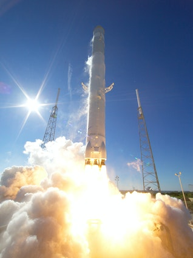

The ocean is dark and mysterious it’s ominous, yet majestic.
The ocean is a tight embrace before the abyss of freedom. It’s a gentle summer breeze caressing your face as the waves splash your ankles — harmless on the surface.
It’s the beautiful array of animals and coral lining the ocean floor, reminding you of eternal beauty.
But it’s forever vast and unknown beings lurk in its depths — danger but never-ending magic beneath the surface.

We are in a generation, where technology has surrounded us from all sides. Our everyday life runs on the use of technology, be it in the form of an alarm clock or a table lamp. Technology has been an important part of our daily lives. Therefore, it is important for the students to be familiar with the term technology. Therefore, we have provided a long speech on technology for students of all age groups. There is also a short speech and a 10 lines speech given in this article.
 Home FACEBOOK PROFILE